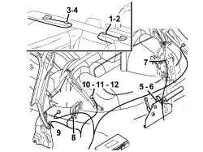
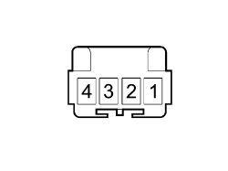
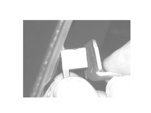

7030HF CHECK ON POSITION SENSOR OPERATION
- Path
- Test > 70 FITTINGS > 7030 SUN ROOF/GLASS PANEL > 7030H AUTOMATICALLY OPERATED HOOD > 7030HF CHECK ON POSITION SENSOR OPERATION
- Kind
- test / check procedure
- Applies to
- engines: 2.2 JTS, 3.2 JTS; all production periods; only with equipment: Spider
- Interactive page
- https://sloeber94.github.io/elrnDB-aBrrSpdr/en/#/946004033
Applies to: engines: 2.2 JTS, 3.2 JTS; all production periods; only with equipment: Spider
STEP | CHECK TO BE PERFORMED | REMEDIAL ACTION IF THE CHECK IS NOT OK |
|---|---|---|
1 | Check on fifth arc intermediate position hall sensor Have the Examiner ready in Voltmeter mode. Connect the positive probe to pin 1 and the negative probe to pin 3. Remove the Hall sensor releasing it from the retaining tabs Op. 7030H75 HOOD FIFTH ARC POSITION SENSOR (ONE), LEFT OR RIGHT - R.R. Place a ferromagnetic plate 1 mm away from the sensor side. Check that the voltage varies from around 12 Volts when the ferromagnetic material is by the sensor to around 9.5 Volts when the ferromagnetic material is further away from the sensor | Move on to Step 2 |
2 | Power supply check Connect between pin 1 of the sensor and earth and check that the voltage is more than 12 Volts | Restore the wiring between the hood control unit and the sensor If the control unit output voltage is not okay, replace the hood control unit Op. 7030H50 AUTOMATIC HOOD ACTIVATING SYSTEM CONTROL UNIT - R.R. FOLLOWING SYSTEM CHECK If the control unit output voltage is okay, replace the arc intermediate position Hall sensor Op. 7030H75 HOOD FIFTH ARC POSITION SENSOR (ONE), LEFT OR RIGHT - R.R. |

1. Left hood sensor on windscreen crossmember
2. Hood left front lock sensor
3. Right hood sensor on windscreen crossmember
4. Hood left front lock sensor
5. Hood cover raised sensor
6. Hood cover lowered sensor
7. Right hood cover lock sensor
8. Left hood cover lock sensor
9. Hood folded sensor
10. Arch raised sensor
11. Arch in intermediate position sensor
12. Arch lowered sensor

Arc position sensors connector

Hall sensor test
Topics linked from this page (2)
- 7030H50 AUTOMATIC HOOD ACTIVATING SYSTEM CONTROL UNIT - R.R. FOLLOWING SYSTEM CHECK
- 7030H75 HOOD FIFTH ARC POSITION SENSOR (ONE), LEFT OR RIGHT - R.R.